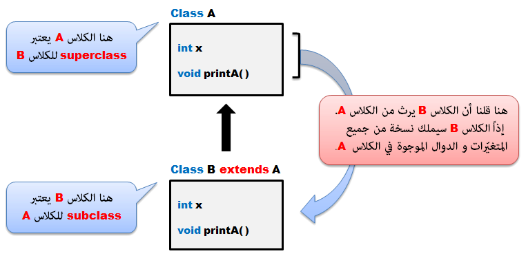
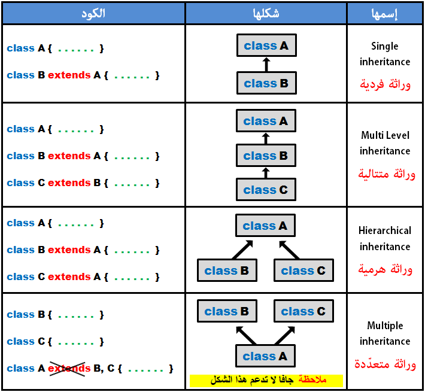
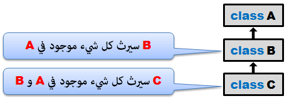
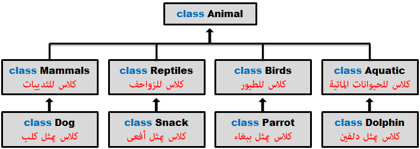
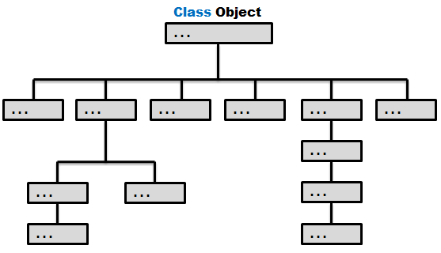

Javaالوراثة في جافا
مفهوم الوراثة في جافا
وراثة: تعني Inheritance في اللغة الإنجليزية. و لقد ذكرت هذه الكلمة عدة مرات في دروس سابقة.
في جافا, الكلاس يمكنه أن يرث من كلاس آخر, و بالتالي يحصل على الدوال و المتغيرات الموجودة في هذا الكلاس.
فكرة الوراثة بسيطة, لكن فائدتها قوية جداً. فمثلاً إذا كنت تريد إنشاء كلاس جديد و لاحظت أنه يوجد كلاس جاهز يحتوي على كودات قد تفيدك يمكنك استغلالها بدل كتابتها من الصفر, أي يمكنك جعل الكلاس الذي قمت بتعريفه يرث هذا الكلاس, و بعدها يمكنك إستخدام جميع المتغيرات و الدوال التي ورثها الكلاس الجديد من الكلاس الجاهز.
مفهوم Superclass و Subclass
الكلاس الذي يرث من كلاس آخر يسمى Subclass و يسمى أيضاً ( derived class, extended class أو child class ).
الكلاس الذي يورث محتوياته لكلاس آخر يسمى Superclass و يسمى أيضاً ( base class أو parent class ).
مثال
الآن لنفترض أننا قمنا بتعريف كلاس إسمه A يحتوي على متغير إسمه x و دالة إسمها printA().
بعدها قمنا بإنشاء كلاس جديد فارغ إسمه B و قلنا أنه يرث من الكلاس A. إذاً هذا يعني أن الكلاس B أصبح يملك نسخة من جميع المتغيرات و الدوال الموجودة في الكلاس A.

إنتبه
الـ Subclass يرث كل شيء موجود في الـ Superclass بشكل تلقائي ما عدا الـكونستركتور.
مع العلم أنه يمكن استدعاء كونستركتور الـ Superclass من الـ Subclass بواسطة الكلمة super التي سنشرحها لاحقاً في هذا الدرس.
الكلمة extends في جافا
الكلمة extends تستخدم لجعل الكلاس يرث من كلاس آخر.
مكان وضع الكلمة extends
نضع الكلمة extends بعد إسم الكلاس, ثم نضع بعدها إسم الكلاس الذي نريد الوراثة منه.
الكود التالي يعني أن الكلاس B يرث من الكلاس A.
مثال
class A {
}
class B extends A {
}
إنتبه: في حال كنت تحاول الوراثة من كلاس غير موجود سيظهر لك الخطأ التالي: java.lang.ExceptionInInitializerError
مثال
الآن لنفترض أننا قمنا بتعريف كلاس إسمه A يحتوي على متغير إسمه x و دالة إسمها printA(). بعدها قمنا بإنشاء كلاس جديد فارغ إسمه B و قلنا أنه يرث من الكلاس A. إذاً هذا يعني أن الكلاس B أصبح يملك نسخة من جميع المتغيرات و الدوال الموجودة في الكلاس A.
بعد إنشاء هذا الكلاس, سنقوم بإنشاء الكلاس Main لتجربته.
مثال
A.java
public class A {
public int x;
public void printA() {
System.out.println("I am from class A");
}
}
B.java
// A يرث المتغيرات و الدوال الموجودة في الكلاس B هنا قلنا أن الكلاس
public class B extends A {
// A سيحتوي المتغيرات و الدوال الموجودة في الكلاس B إذاً أي كائن من الكلاس
}
Main.java
public class Main {
public static void main(String[] args) {
// أم لا A لنتأكد إذا كان يحتوي على الأشياء الموجودة في الكلاس B هنا قمنا بإنشاء كائن من الكلاس
B b = new B();
// A من الكلاس B التي ورثها الكلاس printA() هنا قمنا باستدعاء الدالة
b.printA();
// أيضاً, يمكننا إعطائه قيمة و عرض قيمته x يملك متغير إسمه b و بما أن الكائن
b.x = 123;
System.out.println("x: " +b.x);
}
}
•سنحصل على النتيجة التالية عند التشغيل.
I am from class A
x: 123
الكلمة super في جافا
الكلمة super تستخدم للأهداف التالية:
إذاً الكلمة super تستخدم لإستدعاء الأشياء الموجودة في الـ Superclass.
طريقة استخدام الكلمة super لإستدعاء متغير من الـ Superclass
نضع الكلمة super, بعدها نقطة, ثم نضع إسم المتغير الذي نريد إستدعائه من الـ Superclass.
شاهد المثال »
طريقة استخدام الكلمة super لإستدعاء دالة من الـ Superclass
نضع الكلمة super, بعدها نقطة, ثم نضع إسم الدالة التي نريد إستدعائها من الـ Superclass.
شاهد المثال »
إنتبه
في حال قام الـ Subclass بتعريف دالة كانت أصلاً موجودة في الـ Superclass يجب كتابة الكلمة @Override قبلها مباشرةً, و هكذا سيفهم المترجم أن الـ Subclass قام بتعريف الدالة التي ورثها من الـ Superclass من جديد.
طريقة استخدامها عند استدعاء كونستركتور
يمكن استدعاء كونستركتور الـ Superclass من داخل كونستركتور الـ Subclass من خلال الكلمة super.
super() // عند استدعاء كونستركتور فارغ نكتب هكذا فقط
// أو هكذا
super( parameter List ) // عند استدعاء كونستركتور يحتوي على باراميترات, عليك تمرير قيم له.
في حال كان الـ Superclass يملك فقط كونستركتور لا يحتوي أي باراميترات (أي مثل كونستركتور إفتراضي), سيقوم المترجم باستدعائه بشكل تلقائي في الـ Subclass حتى لو لم تقم باستدعائه بنفسك.
شاهد الأمثلة »
و في حال كان الـ Superclass يملك أكثر من كونستركتور, ستكون مجبر على تعريف كونستركتور في الـ Subclass يستدعي أي كونستركتور من الكونستركتورات الموجودة في الـ Superclass.
شاهد الأمثلة »
أشكال الوراثة في جافا
في أي لغة برمجة, يوجد 3 أشكال أساسية للوراثة كما في الصورة التالية.

جافا لا تدعم تعدد الوراثة كما يوجد في بعض لغات البرمجة الأخرى, أي لا يمكن للكلاس الواحد الوراثة في نفس الوقت من أكثر من كلاس.
إذاً الكلاس الوحد لا يمكنه أن يفعل extends لأكثر من كلاس , بمعنى أن كل كلاس يمكنه وراثة كلاس واحد.
جافا تدعم تعدد الوراثة من خلال interface, أي من أجل الوراثة من أكثر من كلاس يجب إستخدام الكلمة interface بدلاً من class, و استخدام الكلمة implements بدلاً من extends ضمن شروط معينة. ستتعلم تعدد الوراثة في درس لاحق.
بالنسبة للوراثة المتتالية ( أو المتعددة المستويات ), دائماً آخر كلاس يرث جميع المتغيرات و الدوال الموجودة في الكلاسات الأعلى منه.

علاقة الكائنات مع بعضها في جافا
لنفترض أننا سنقوم بإنشاء برنامج لحفظ معلومات عن الحيوانات, يجب في البداية تجهيز كلاس أساسي يمثل جميع الخصائص المشتركة بين الحيوانات, بعدها يجب تقسيم الحيوانات إلى أربع فئات أساسية (ثدييات, زواحف, طيور, حيوانات مائية). بعدها يجب تعريف كل حيوان ضمن الفئة التي ينتمي لها.

الآن سنقوم بتمثيل المطلوب في الصورة بلغة جافا.
مثال
// هنا قمنا بتعريف الكلاس الأساسي لجميع الحيوانات
class Animal { }
// هنا قمنا بتعريف فئات الحيوانات
class Mammals extends Animal { }
class Reptiles extends Animal { }
class Birds extends Animal { }
class Aquatic extends Animal { }
// هنا قمنا بتعريف 4 حيوانات مع وضع كل حيوان ضمن فئته
class Dog extends Mammals { }
class Snack extends Reptiles { }
class Parrot extends Birds { }
class Dolphin extends Aquatic { }
إذاً هنا يمكننا قراءة الكود كالتالي:
Dog يعتبر من الـ Mammals و يعتبر Animal أيضاً.
Snack يعتبر من الـ Reptiles و يعتبر Animal أيضاً.
Parrot يعتبر من الـ Birds و يعتبر Animal أيضاً.
Dolphin يعتبر من الـ Aquatic و يعتبر Animal أيضاً.
العامل instanceof في جافا
العامل instanceof يستخدم لمعرفة إذا كان الكائن ينتمي إلى كلاس معين أم لا.
يرجع true في حال كان الكائن ينتمي لكلاس معين, غير ذلك يرجع false.
مثال
الآن سنقوم بكتابة الكود السابق و استخدام العامل instanceof لمعرفة الكلاسات التي ينتمي إليها الكائن.
ملاحظة: هنا قمنا بتعريف جميع الكلاسات كـ private وراء بعضهم في نفس ملف الجافا لأن جافا تسمح بذلك. لكننا لا ننصح باستخدام هذا الأسلوب في البرامج العادية.
كما أننا سنستخدم العامل instanceof في دروس لاحقة.
مثال
Main.java
// هنا قمنا بتعريف الكلاس الأساسي لجميع الحيوانات
class Animal { }
// هنا قمنا بتعريف فئات الحيوانات
class Mammals extends Animal { }
class Reptiles extends Animal { }
class Birds extends Animal { }
class Aquatic extends Animal { }
// هنا قمنا بتعريف 4 حيوانات مع وضع كل حيوان ضمن فئته
class Dog extends Mammals { }
class Snack extends Reptiles { }
class Parrot extends Birds { }
class Dolphin extends Aquatic { }
public class Main {
public static void main(String[] args) {
// Dog هنا قمنا بإنشاء كائن من الكلاس
Dog dog1 = new Dog();
// dog1 هنا قمنا باختبار الكلاسات التي ينتمي إليها الكائن
System.out.println( dog1 instanceof Dog);
System.out.println( dog1 instanceof Animal);
}
}
•سنحصل على النتيجة التالية عند التشغيل.
true
true
الكلاس Object في جافا
في جافا, يوجد مئات الكلاسات الجاهزة التي تم بناءها بشكل هرمي كما في الصورة التالية.

جميع الكلاسات في جافا ترث بشكل تلقائي من الكلاس Object لأنه فعلياً يأتي في رأس الهرم و بالتالي فوق الجميع.
إذاً الكلاس Object هو أعلى Superclass في جافا.
و إذا لاحظت في الدروس السابقة أن أي كلاس جديد كنا نستخدمه يحتوي على الدوال equals(), hashcode(), toString() إلخ..
سبب وجود هذه الدوال في كل كلاس كنا نستخدمه أنه ورثوهم من الكلاس Object.

 محرر الويب
محرر الويب نظام الألوان
نظام الألوان محول الوحدات
محول الوحدات محلل عناوين الشبكات
محلل عناوين الشبكات